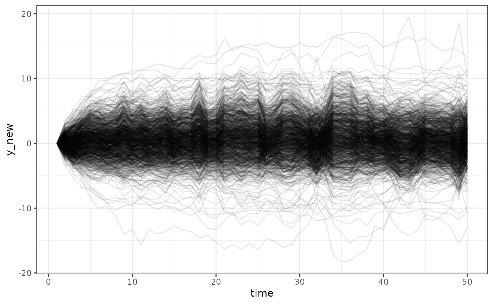

Obtain counterfactual predictions for a dynamitefit object.
Arguments
- object
[
dynamitefit]
The model fit object.- newdata
[
data.frame]
Data used in predictions. Predictions are computed for missing (NA) values in the response variable columns, and non-missing values are assumed fixed. IfNULL(default), the data used in model estimation is used for predictions as well, after all values in the response variable columns after the firstfixedtime point are converted toNAvalues. Missing values in predictor columns can be imputed (argumentimpute). There should be no new time points that were not present in the data that were used to fit the model. New group levels can be included, but if the model contains random effects, an option for the random effects for the new levels must be chosen (argumentnew_levels). If the grouping variable of the original data is missing, it is assumed that all observations innewdatabelong to the first group in the original data. New group levels are not allowed for models using latent factors.- type
[
character(1)]
Type of prediction,"response"(default),"mean", or"link".- funs
[
list()]
A named list whose names should correspond to the response variables of the model. Each element offunsshould be a a namedlistof functions that will be applied to the corresponding predictedtypeof the channel over the individuals for each combination of the posterior draws and time points. In other words, the resulting predictions will be averages over the individuals. The functions should take the correspondingtypevariable values as their only argument. Iffunsis empty, the full individual level values are returned instead. Note that this argument can only be used if there are multiple individuals (i.e.,groupwas notNULLin thedynamitecall).- impute
[
character(1)]
Which imputation scheme to use for missing exogenous predictor values. Currently supported options are no imputation:"none"(default), last observation carried forward:"locf", and next observation carried backward:"nocb".- new_levels
[
character(1)]
Defines if and how to sample the random effects for observations whose group level was not present in the original data. The options are:"none"(the default) which will signal an error if new levels are encountered."bootstrap"which will randomly draw from the posterior samples of the random effects across all original levels."gaussian"which will randomly draw from a Gaussian distribution using the posterior samples of the random effects standard deviation (and correlation matrix if applicable)."original"which will randomly match each new level to one of the original levels. The posterior samples of the random effects of the matched levels will then be used for the new levels.
This argument is ignored if the model does not contain random effects.
- global_fixed
[
logical(1)]
IfFALSE(the default), the first non-fixed time point is counted from the the first non-NA observation for each group member separately. Otherwise, the first non-fixed time point is counted from the first time point globally. If there are no groups, then the options are equivalent.- n_draws
[
integer(1)]
Number of posterior samples to use, default isNULLwhich uses all samples without permuting (with chains concatenated). Ifn_drawsis smaller thanndraws(object), a random subset ofn_drawsposterior samples are used.- thin
[
integer(1)]
Use only everythinposterior sample. This can be beneficial with when the model object contains large number of samples. Default is1meaning that all samples are used.- expand
[
logical(1)]
IfTRUE(the default), the output is a singledata.framecontaining the originalnewdataand the predicted values. Otherwise, alistis returned with two components,simulatedandobserved, where the first contains only the predicted values, and the second contains the originalnewdata. SettingexpandtoFALSEcan help conserve memory becausenewdatais not replicatedn_drawstimes in the output. This argument is ignored iffunsare provided.- df
[
logical(1)]
IfTRUE(default) the output consists ofdata.frameobjects, anddata.tableobjects otherwise.- ...
Ignored.
Value
A data.frame containing the predicted values or a list of two
data.frames. See the expand argument for details. Note that the
.draw column is not the same as .draw from as.data.frame and
as_draws methods as predict uses permuted samples. A mapping between
these variables can be done using information in
object$stanfit@sim$permutation.
Details
Note that forecasting (i.e., predictions for time indices beyond the last
time index in the original data) is not supported by the dynamite
package. However, such predictions can be obtained by augmenting the
original data with NA values before model estimation.
See also
Obtaining predictions
fitted.dynamitefit()
Examples
data.table::setDTthreads(1) # For CRAN
out <- predict(gaussian_example_fit, type = "response", n_draws = 2L)
head(out)
#> id time .draw y_new x z y
#> 1 1 1 1 0.4046907 -0.5753470 0 0.4046907
#> 2 1 2 1 2.1157969 1.0527115 1 1.3665618
#> 3 1 3 1 0.4849242 0.1192452 0 0.1047957
#> 4 1 4 1 0.4413383 -0.5211173 0 0.9295666
#> 5 1 5 1 1.0301223 1.3011760 1 0.8605904
#> 6 1 6 1 2.8054966 -0.2052993 1 2.1160820
# using summary functions
sumr <- predict(multichannel_example_fit, type = "mean",
funs = list(g = list(m = mean, s = sd), b = list(sum = sum)),
n_draws = 2L)
head(sumr$simulated)
#> m_g s_g sum_b time .draw
#> 1 NA NA NA 1 1
#> 2 0.3755056 0.7000052 27.14166 2 1
#> 3 0.5766777 0.6202268 28.60584 3 1
#> 4 0.7728294 0.4951259 30.10362 4 1
#> 5 0.9144364 0.4248908 31.66146 5 1
#> 6 1.0603167 0.4172720 31.90943 6 1
# \donttest{
# Please update your rstan and StanHeaders installation before running
# on Windows
if (!identical(.Platform$OS.type, "windows")) {
# Simulate from the prior predictive distribution
f <- obs(y ~ lag(y) + varying(~ -1 + x), "gaussian") +
splines(df = 10, noncentered = TRUE)
# Create data with missing observations
# Note that due to the lagged term in the model,
# we need to fix the first time point
d <- data.frame(y = c(0, rep(NA, 49)), x = rnorm(50), time = 1:50)
# Suppress warnings due to the lack of data
suppressWarnings(
priors <- get_priors(f, data = d, time = "time")
)
# Modify default priors which can produce exploding behavior when used
# without data
priors$prior <- c(
"normal(0, 1)",
"normal(0.6, 0.1)",
"normal(-0.2, 0.5)",
"normal(0.2, 0.1)",
"normal(0.5, 0.1)"
)
# Samples from the prior conditional on the first time point and x
fit <- dynamite(
dformula = f,
data = d,
time = "time",
verbose = FALSE,
priors = priors,
chains = 1
)
# Simulate new data
pp <- predict(fit)
ggplot2::ggplot(pp, ggplot2::aes(time, y_new, group = .draw)) +
ggplot2::geom_line(alpha = 0.1) +
ggplot2::theme_bw()
}
#>
#> SAMPLING FOR MODEL 'anon_model' NOW (CHAIN 1).
#> Chain 1:
#> Chain 1: Gradient evaluation took 2e-05 seconds
#> Chain 1: 1000 transitions using 10 leapfrog steps per transition would take 0.2 seconds.
#> Chain 1: Adjust your expectations accordingly!
#> Chain 1:
#> Chain 1:
#> Chain 1: Iteration: 1 / 2000 [ 0%] (Warmup)
#> Chain 1: Iteration: 200 / 2000 [ 10%] (Warmup)
#> Chain 1: Iteration: 400 / 2000 [ 20%] (Warmup)
#> Chain 1: Iteration: 600 / 2000 [ 30%] (Warmup)
#> Chain 1: Iteration: 800 / 2000 [ 40%] (Warmup)
#> Chain 1: Iteration: 1000 / 2000 [ 50%] (Warmup)
#> Chain 1: Iteration: 1001 / 2000 [ 50%] (Sampling)
#> Chain 1: Iteration: 1200 / 2000 [ 60%] (Sampling)
#> Chain 1: Iteration: 1400 / 2000 [ 70%] (Sampling)
#> Chain 1: Iteration: 1600 / 2000 [ 80%] (Sampling)
#> Chain 1: Iteration: 1800 / 2000 [ 90%] (Sampling)
#> Chain 1: Iteration: 2000 / 2000 [100%] (Sampling)
#> Chain 1:
#> Chain 1: Elapsed Time: 0.176 seconds (Warm-up)
#> Chain 1: 0.157 seconds (Sampling)
#> Chain 1: 0.333 seconds (Total)
#> Chain 1:

# }